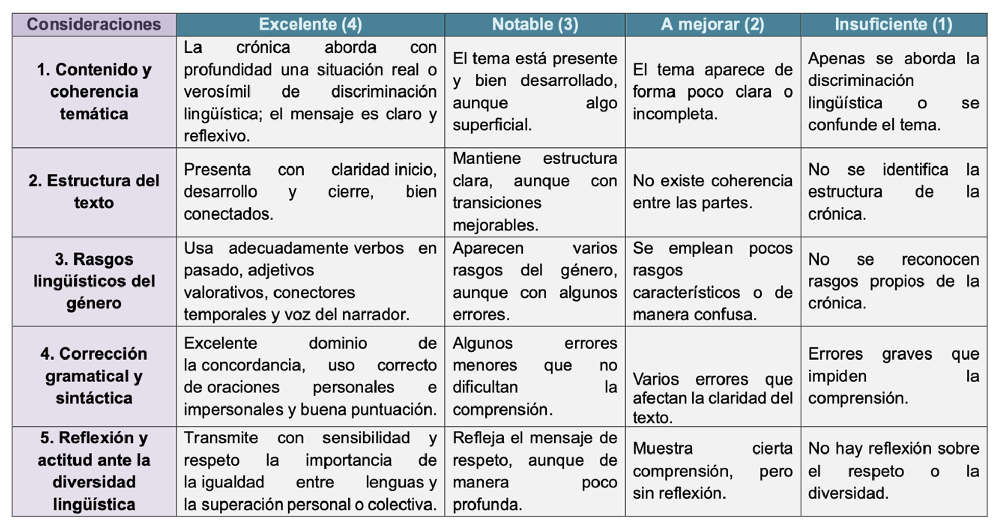

Texto
¡Ha llegado el momento de convertirte en periodista! En esta fase crearás tu crónica social. Tu misión es dar voz a una persona (real o imaginaria) que haya defendido su lengua o dialecto frente a la discriminación.
Recordamos: ¿Qué es una crónica?
Antes de escribir, recuerda que la crónica es un género periodístico híbrido: mezcla la información de la noticia con la opinión y el estilo literario del autor.
Estructura que debe tener tu trabajo:
- Titular: Debe ser llamativo y sugerir el conflicto lingüístico.
- Entradilla (Lead): Un párrafo corto que responda a las preguntas básicas (quién, qué, dónde, cuándo), pero con un toque narrativo.
- Cuerpo: Aquí narras los hechos en orden cronológico. Es fundamental usar verbos en pasado (pretérito perfecto simple e imperfecto) y conectores temporales (mientras tanto, al día siguiente, finalmente).
- Conclusión: Un cierre que invite a la reflexión sobre la diversidad y el respeto.
Visualiza este vídeo y anota las ideas clave en tu cuaderno para poder elaborar con corrección tu propia crónica.
Paso 1: El borrador en Google Docs
No empieces directamente en el diseño; primero debemos pulir el texto.
1.º. Abre un documento nuevo en Google Docs.
2.º. Redacta tu historia asegurándote de que los párrafos estén bien separados.
3.º. Revisión
Pide a tu pareja de trabajo que lea tu borrador y compruebe si se entiende bien el mensaje de "lucha justa".
4.º. Revisa la ortografía (especialmente las tildes del pretérito imperfecto en los verbos de la narración).
Paso 2: Diseño editorial en Canva
Una vez que el texto sea perfecto, vamos a darle un acabado profesional:
1.º. Accede a Canva con tu cuenta educativa.
2.º. En el buscador, escribe: "Periódico" o "Newsletter" y elige una plantilla que sea limpia y fácil de leer. A continuación, te dejo una selección de plantillas que puedes usar. Pincha en el siguiente enlace: Plantillas de CANVA. Además, en este tutorial podrás consultar todas las funcionalidades:
3.º. Vuelca tu texto
Copia y pega desde Google Docs. Ajusta el tamaño de la fuente (mínimo 10pt para el cuerpo y 24pt para el titular).
4.º. Imagen con ética
Busca una imagen que refuerce tu historia. Recuerda usar el buscador de fotos con licencia libre de Canva o las que buscamos en el Nodo 3. ¡No olvides poner el pie de foto citando al autor!
5.º. Multimodalidad
Si tu crónica habla de un sonido o lengua específica, puedes insertar un Código QR que lleve al audio correspondiente del Atlas Sonoro.
¡Que nada te detenga!
En el periodismo real, los problemas técnicos son habituales. Como expertos digitales, tenemos soluciones:
| ¿No hay internet? |
Si la conexión falla, no pierdas el tiempo. Sigue escribiendo tu borrador en el procesador de textos local (Word/LibreOffice) o incluso en tu cuaderno.
| ¿Canva va lento? |
Cierra pestañas innecesarias. Si persiste el problema, guarda tu texto y realiza el diseño del boceto a mano en un folio A4 para tener clara la distribución de espacios.
| ¿Has perdido el acceso? |
Consulta inmediatamente al monitor/a TIC de tu grupo o a tu docente. ¡Lo más importante es la calidad de tu historia, el formato es solo el envoltorio!
Instrumento de evaluación: la crónica
